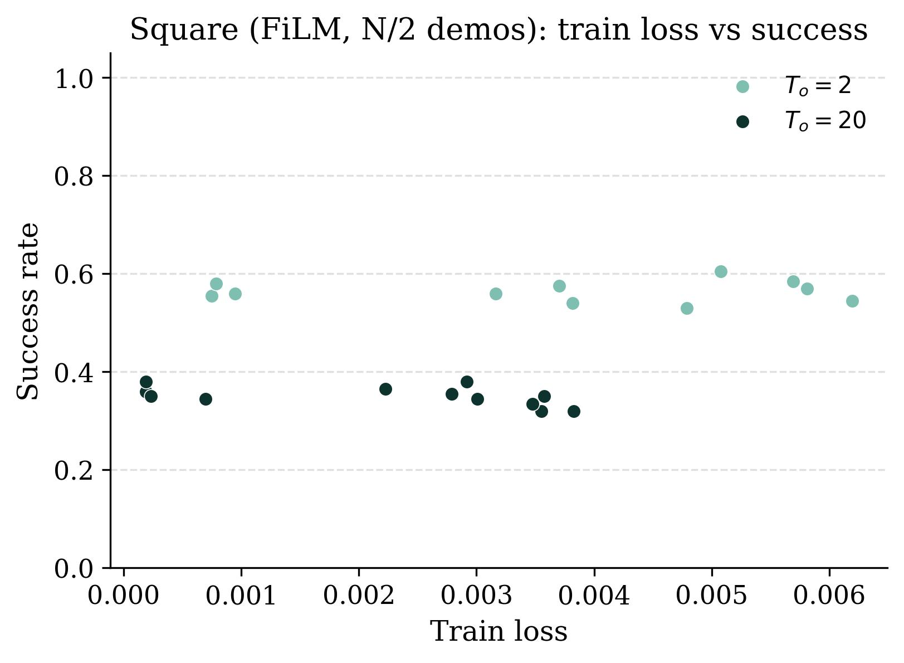
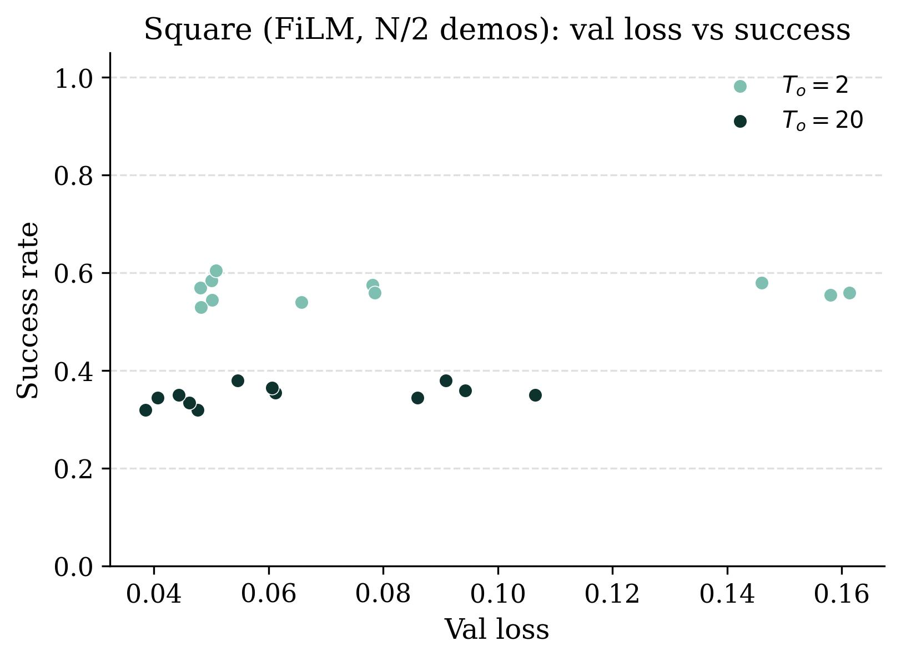
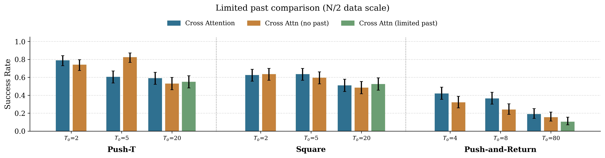
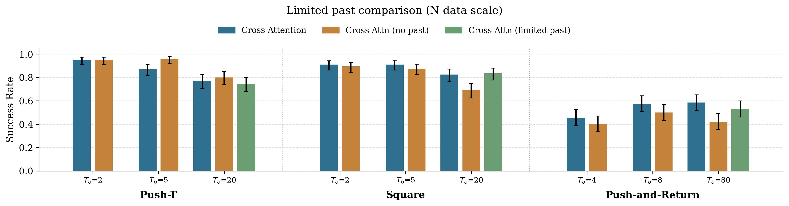

A. Reasons for Long-Context Failure
We saw how long-context policies do not show catastrophic failure in most cases. However, especially in the low data regime (N/2 trajectories), long-context policies still perform worse than short-context ones for some tasks. In this section, we further diagnose the reasons behind these behaviors.
A.1 Training and test loss
All saved checkpoints are evaluated and the success rate of the best checkpoint is reported. We note that because the work presented in this section has only been done for one training run, the results can be noisy.


Some architectures like UNet+FiLM show a sharper drop as context length is increased compared to UNet+Cross-Attention. For UNet+FiLM, consider Figure 1, which compares the training and validation loss respectively against the success rate for all checkpoints saved during training for the square task trained with N/2 trajectories. As context length increases from short to long, checkpoint clusters shift downward and leftward: both training and validation loss decrease overall, but so does the success rate.
The trend with training loss shows a standard over-fitting problem: policies fit the training data better in higher dimensions, but this is not sufficient for closed-loop rollouts. The validation loss curve hints toward an even more interesting trend seen in imitation learning: long-context policies perform better on open-loop validation samples drawn from the expert distribution, but perform worse when rolled out closed loop. This hints toward covariate shift in imitation learning. Both these trends point at data scaling and relevant inductive biases as favorable solutions for long-context learning.
As mentioned above, we show results from one training run, so results can be noisy. The best way to reproduce this experiment would be to have multiple training runs, and then average the clusters from checkpoints saved during each training to produce a less noisy version of Figure 1. This, we believe, would also give more consistent results across architectures, checkpoints, and context lengths, and is a very relevant direction for future work.
A.2 Manipulation Skill Learning
In the low data regime, grasp-and-return provides good long-context performance, whereas push-and-return performance drops. We now comment in detail on an additional evaluation criterion to investigate what do policies fail to learn as context length increases?
For push-and-return, both task success and manipulation completion show dropping performance with increasing context length in the N/2 data regime. However, contextual success is high for long-context policies even when trained on N/2 trajectories. This indicates that in the low data regime, most long-context policies are failing to learn to manipulate within the constraints of the task. In fact, those policies which do learn to complete manipulation also show good tracking of history. Thus, long-context policies for this task fail due to difficulty learning the manipulation skill within the realms of the task. Simultaneous and mirroring improvement in task success and manipulation completion confirms this hypothesis.
We note that this simultaneous improvement between task success and manipulation completion is also seen in the grasp-and-return task. However, both are already good for this task in the low data regime, perhaps because this task builds on a locally stable manipulation skill.
B. Past-Token Prediction
Torne et al. (2025) introduce predicting past action tokens as an auxiliary loss that helps with long-context imitation learning. Additionally, they propose freezing the observation encoder as a training-time optimization technique not impacting policy performance. In this section, we independently investigate which aspect contributes to performance gains.
We first investigate how much past-action prediction, by itself, impacts policy performance (independent of other parts of the work). Because past-action prediction wasn’t proposed by Torne et al. (2025) but rather present in the original work of Chi et al. (2024), we also investigate if predicting past actions helps with short-context policy learning.
Investigating Figure 2, we find that by itself, predicting past actions presents limited advantages. While advantages at long context lengths are evident for square and push-and-return in the N data regime, performance is more similar in the limited data case. There are also no noticeable trends for short-context policy performance. Given the limited advantage which is not seen across data scale, we conclude that the benefit of predicting past actions by itself is unclear for long-context learning.


As a final note, Torne et al. (2025) also propose an inference-time verification technique, where multiple action chunks are sampled from the policy, and the chunk with past actions most consistent with the actually executed past actions is executed. We exclude this technique from our analysis because it reduces inference speed as we evaluate a large number of policies, and by the authors’ own admission, this helps by up to only 5%. We did run some comparisons presented in Table 1 and found that the success improvement from this technique was statistically insignificant, and thus excluded it from our comparisons.
| Task | With verification | Without verification |
|---|---|---|
| Square | 176/200 | 175/200 |
| Push-T | 190/200 | 188/200 |
C. Additional Related Works
C.1 Context Length in Imitation Learning
We have already introduced and discussed the work from Torne et al. (2025), Mark et al. (2026), and Sridhar et al. (2025). We now elaborate on these. Mark et al. (2026) suggest using a pre-trained VLM to identify key events in policy history, and only conditioning the policy on these VLM-identified frames. They also argue that naively increasing context length can avoid failure, but focus on action chunking as the reason for this. They have a limited data-scaling ablation, but it largely agrees with our results.
Other methods use language-based summarization of observation histories (Sridhar et al., 2025; Torne et al., 2026). They keep track of historic events through language / intermediate tokens summarizing the history of observations. While Sridhar et al. (2025) rely on just the most recent observation for control, Torne et al. (2026) introduce video-based observation encoding for the recent history. Such a method, however, would require extensive pre-training (they pre-train on internet-scale data).
Song et al. (2025) propose attention between noisy versions of conditioning and action trajectory at training time, and temporal classifier-free guidance at sampling time. Their model, however, is a video prediction model, which predicts both future actions and observations and can be data- and compute-intensive.
C.2 Context Length in Reinforcement Learning in Robotics
Reinforcement learning in robotics frequently provides solutions for more dynamic tasks, and RL policies therefore often use longer context lengths than seen in imitation learning (though these observations are typically in joint space, unlike the RGB observations seen in imitation learning). Some RL works in robotics have provided explicit comments on context length.
- Li et al. (2024) use a context of 66 (2 seconds at 33 Hz). Along with the entire history provided as an encoded embedding, they provide the recent 4 frames directly to the base model, arguing that full history and recent history are used differently and therefore recent history should additionally be provided through separate channels.
- Kumar et al. (2021) split the policy into a base policy and an adaptation module. The adaptation module takes a long history and produces latent embeddings at a lower frequency, while the base policy only takes recent state and this latent embedding to produce control at a higher frequency.
- Peng et al. (2018) and Singh et al. (2023) provide ablations comparing feed-forward policies with history against LSTM-based policies. Peng et al. argue that a non-state-history-based LSTM better generalizes to the dynamics of a physical system, while Singh et al. choose a non-history-based policy as the best performer based on their ablations.
C.3 Context Length Understanding in LLMs
We believe the robotics community needs to build an understanding of policy learning in the presence of longer contexts. The LLM community has considerable work exploring the factors that impact performance of LLMs with longer conditioning contexts.
- Liu et al. (2023) show that LLM performance for long-context inputs significantly depends on the location of relevant information in the input. Specifically, performance degrades if the most relevant information is in the middle of the model input history.
- Li et al. (2024) create a benchmark for long-context understanding in LLMs and show that LLMs struggle with “intricate long dependency tasks”.
- Qin et al. (2023) show that certain attention mechanisms can lead to insufficient attention being paid to distant tokens in longer contexts.